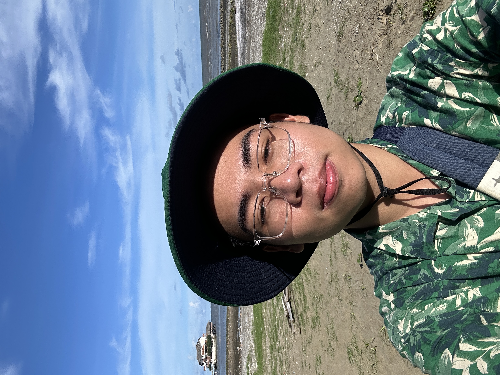

Welcome to my little corner of the internet.
I want to save this little place anything that is worth sharing, but does not fit a regular social media post.
Think about this place like a website where someone was experimenting with the internet when things were quite simple :).
This is the wilderness of my thoughts. I'll guide you through and you may know about me a bit better. One more thing, there is music embedded with this page, so turn your sound on and click the button.
Major and Academic Discipline

My current major is General Engineering class of '28, and my first choice major is Chemical Engineering. One of my biggest ambitions with a Chemical Engineering degree is to work with alternative fuels. This includes hydrogen fuel and biofuel. Also, my current interest is to close the gap between human and data interaction. This includes machine learning to analyze large data, human-like voice chatbots, and innovative ways to interact with computers (The new Meta glasses and Apple Spatial Computer are great examples). I am also interested in implementing AI/Machine Learning to spearhead biofuel, hydrogen fuel, or whatever alternative fuel through upcycling and circular economy.
Hats that I wear
I wear lots of hats, from caps, bucket hats, to the Vietnamese traditional "Khăn Đống." Here are some "hats" that I wear:
The green bucket hat: I usually present myself on the internet wearing a green bucket hat, and I try to keep it consistent with whatever place I took the picture, or whatever the platform is. The bucket hat in Vietnamese, with word-by-word translation, is duckweed hat. It is simple, down-to-earth, and has a strong connection to agriculture in the Vietnamese culture. In fewer words, it is my authentic self-representation.
The orange construction hat: It is me with the chemical engineering stuff. Me in a hard orange hat means I am locked in with chemical engineering. A bit technical, a bit dry, but cross-knowledge in machine learning and chemical engineering is quite essential.
The no-hat hat (and black-frame glasses): I usually wear a lightweight transparent pair of glasses like the picture above for comfort, but you can also find me sitting in a conference room looking quite irritated with no hat, and a pair of black-frame glasses (the lens are still transparent, I don’t want to look like James Bond). I am currently the president of the International Students Association at Texas A&M, and I work closely with the ISSS and the MSC (and sometimes the Provost) on international student issues.
Individual Competencies
Here are somethings that I can do and am really proud of:
Mindset for sustainability: this does not only mean that I prefer tote bags over plastic bags, but also sustainability in the things that I build and help build. For example, I write blogs, but they are in Markdown and are not trapped inside WordPress files, so they can still exist and be readable way beyond the point where the current internet infrastructure is obsolete. With a similar mindset, my products can be sustained for quite some time. (a long time)
Remix of traditions and innovations: I embrace the past and build upon it.
Graphic design and branding: I can also quickly establish an adequate branding for startups and businesses.
Fail-Safe Mechanisms
What I do if I cannot make any mistake:
Ask my high school math teachers; they seem to know the answer to a lot of things, or at least the pathway to it.
Triple check it, then go to sleep, wake up the next morning, triple check it again, then double check it in the afternoon.
Sing a song in full, from memory, then come back to check it again.
No Consequences
What I would do if there were no consequences:
I would love to sneak on planes and travel the world, acting like a pilot, like in Catch Me If You Can.
I would also love to sneak into a Ferrero Rocher factory to find out if they have umpa loompas working in there.
I would also love to spend the entire night inside Zachry.